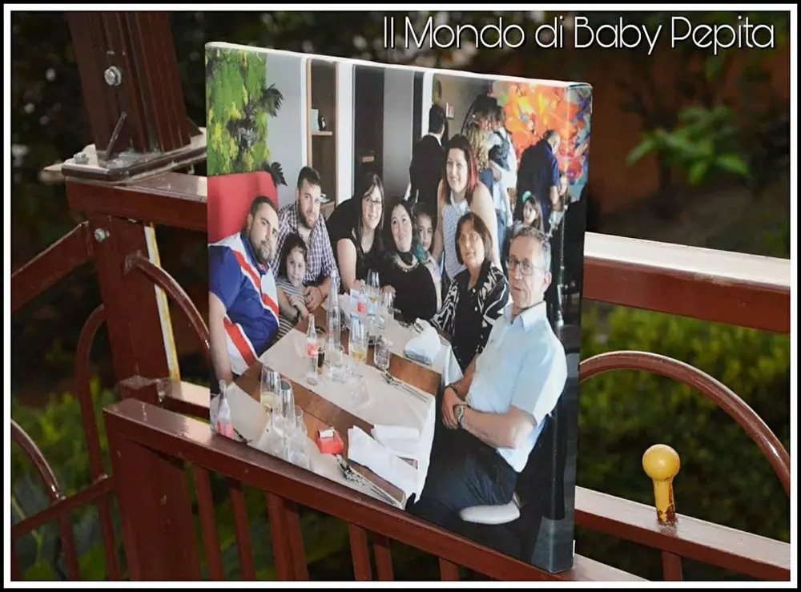
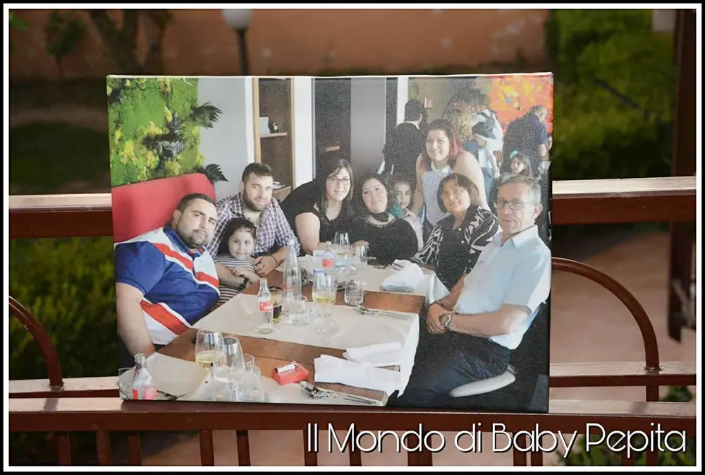
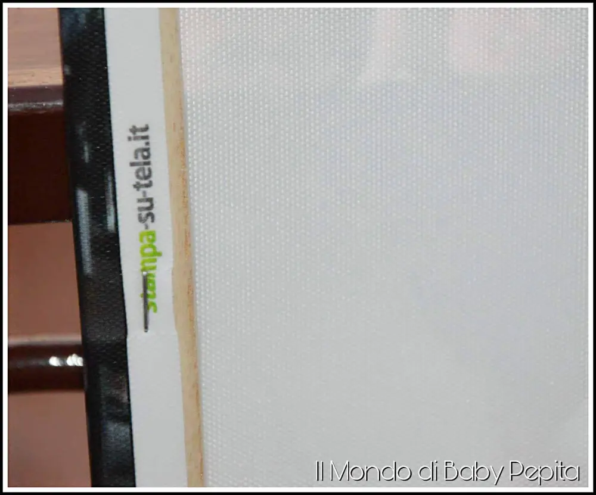

Quadro su tela: www.stampasutela.it
Quadro su tela: Catturare attimi attraverso i nostri occhi è diventato un qualcosa di sfuggente al giorno d'oggi, presi dalla vita frenetica e dai mille pensieri che essa concerne.
Esistono però, cose che non passano mai di moda, la fotografia. Questa grande arte dell'immortalare istanti di eterno.
È stupendo riuscire a fare di un istante un ricordo, che sia un paesaggio o un volto. Ancor di più se si tratta di famiglia come in questo caso.
Diventa poi arte ancor di più come viene incorniciato il tutto. Ad oggi esistono tantissimi modi per incorniciare o realizzare una foto che sia a matita, ad olio, a tela, su carta lucida, carta graffiata. Insomma ormai tutte le nostre foto possono essere vere e proprie opere d'arte nei nostri salotti.

Quest'oggi io voglio farvi vedere un quadro su tela. Bellissimo effetto su tela tenendo fede ai colori originari dell'immagine, il tutto impressa su un telaio in legno stesa a mano.
Vi svelo dove l'ho acquistata, sul sito www.stampasutela.it
Il mio quadro è di una misura modesta 40x30 ideale da mettere in salotto o in camera.

Prezzo: 19,00€
Metodo di pagamento: È possibile pagare tramite carta di credito, postapey, PayPal.
Tempi di consegna: Spedizione in 24/48 ore Se si effettua un ordine superiore a 70€ la spedizione è gratuita.
Su questo sito è facilissimo acquistare in totale autonomia il proprio quadro in quanto, già appena entrate e scegliete l'articolo desiderato, vi farà caricare la foto che vorrete stampare.
Dopodiché vi mostrerà il formato ed il prezzo corrispondente, poi lo spessore del telaio, se desiderato i bordi oppure no, la stessa cosa per la cornice e poi si passa all'acquisto finale.
Prima di finire del tutto l'acquisto vi farà un resoconto delle caratteristiche prescelte in modo da essere super sicuri dei propri acquisti.
Un vero e proprio capolavoro realizzato da voi stessi che vi sarà recapitato direttamente a casa vostra a prezzi davvero piccoli piccoli.

Io sono soddisfatta del mio quadro di famiglia e non posso fare altro che consigliarlo a tutti.
È possibile realizzare oltre a quadri, anche coperte, cuscini, puzzle, tazze, cover cellulare, tappetino mouse, fotolibro, fotocalendario ed altro.